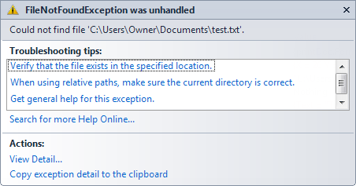

How to Open a Text File in VB .NET
The ability to open up a text file and read its contents can be very useful to you in your programming life. You might have a text file containing quiz questions and answers, for example. You could read the questions and answers from a text file and create your own "Who wants to be a Millionaire" game. Or you might want to save some data associated with your programme, and then open it up again when the programme starts. Well see how to open up a text file in VB .NET right now. In a later section, you'll learn how to save data to a text file.
To open up a text file, you need to create something called a "StreamReader". This, as its name suggests, reads streams of text. The StreamReader is an object available to System.IO. You create a StreamReader like this (if you have Windows XP, you can just use C:\test.txt instead of the longer file name we use for these text file tutorials):
Dim FILE_NAME As String = "C:\Users\Owner\Documents\test.txt"
Dim objReader As New System.IO.StreamReader( FILE_NAME )
The first line just sets up a string variable called FILE_NAME. We store
the path and name of our text file inside of the string variable:
= "C:\Users\Owner\Documents\test.txt"
We're saying that there is a text file called test which is at the location (path) "C:\".
You set up the StreamReader to be a variable, just like a String or Integer variable. But we're setting up this variable differently:
Dim objReader As New System.IO.StreamReader( FILE_NAME )
We've called the variable objReader. Then, after the "As" word comes "New". This means "Create a New Object". The type of object we want to create is a StreamReader object:
System.IO.StreamReader
Sysytem is the main object. IO is an object within System. And StreamReader is an object within IO.
StreamReader needs the name of a file to Read. This goes between a pair of round brackets:
System.IO.StreamReader( FILE_NAME )
VB will then assign all of this to the variable called objReader. So instead of assigning say 10 to an Integer variable, you are assigning a StreamReader to a variable.
Read To End
But this won't do you any good. We haven't actually opened the text file yet. We've just told VB where the text file is and what object to open it with. You do the opening like this:
TextBox1.Text = objReader.ReadToEnd
Now that objReader is an object variable, it has its own properties and methods available for use (in the same way that the textbox has a Text property).
One of the Methods available to our new StreamReader variable is the ReadToEnd method. This will read the whole of your text, right to the end. We're then popping this in a textbox.
Let's test all this theory out. Do the following:
- Start a new project
- Add a textbox to your new form, and just leave it on the default Name of Textbox1
- Set its MultiLine property to True
- Add a Button to your form
- Double click the button and add the following code for it:
Dim FILE_NAME As String = "C:\Users\Owner\Documents\test.txt"
Dim objReader As New System.IO.StreamReader( FILE_NAME )
TextBox1.Text = objReader.ReadToEnd
objReader.Close()
The last line closes the StreamReader we set up. You have to close your stream objects after you’ve used them, otherwise you’ll get errors messages.
When you’re done, run your programme and click your Button.
Unless you already have a file called test.txt at the location specified
you’ll get this error message popping up:

The last line spells it out clearly: Could not find file "C:\Users\Owner\Documents\test.txt". So we were trying to read a text file that doesn't exist.
No more reading these lessons online - get the eBook here!
Does the File Exist?
You can, though, test to see if the file exists. If it does, you can open it; if not, you can display an error message. Amend your code to this (the new lines are in bold):
Dim FILE_NAME As String = "C:\Users\Owner\Documents\test.txt"
If System.IO.File.Exists(FILE_NAME) = True Then
Dim objReader As New System.IO.StreamReader(FILE_NAME)
TextBox1.Text = objReader.ReadToEnd
objReader.Close()
Else
MsgBox("File Does Not Exist")
End If>
We've now wrapped up our code in an If Statement. The first line of the If Statement is this:
If System.IO.File.Exists( FILE_NAME ) = True Then
This tests to see whether or not a file exists. Again, you start with System.IO. Then you access another object of System.IO - the File object. This has a method called Exists. In between the round brackets, you type the name (or variable) of the file you want to check. The value returned will either be True (if it does exists), or False (if it doesn't).
If the file exist then we can go ahead and create our StreamReader; If it doesn't, we can display a error message for the user.
So that your programme will work, there is a file below called "test.txt". Download this to your computer, either in the main C:\ folder for XP users, or the Documents folder if you have Vista/Windows7. (Right click the file and select Save Target As (IE), or Save Links As (Firefox):
Download the "test.txt" Text File here
When you have done that, run your programme again. Click the button once more, and you should see the text from your file appear in the textbox. (If you get the error message again, it means you haven't copied the file to the right place.)
In the next part, we'll see how to read the contents line by line, instead of all in one go.